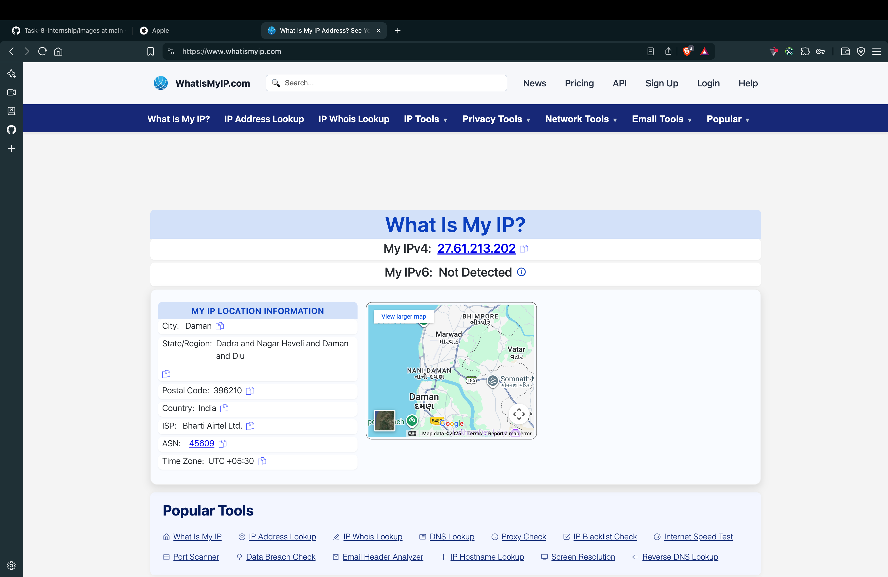
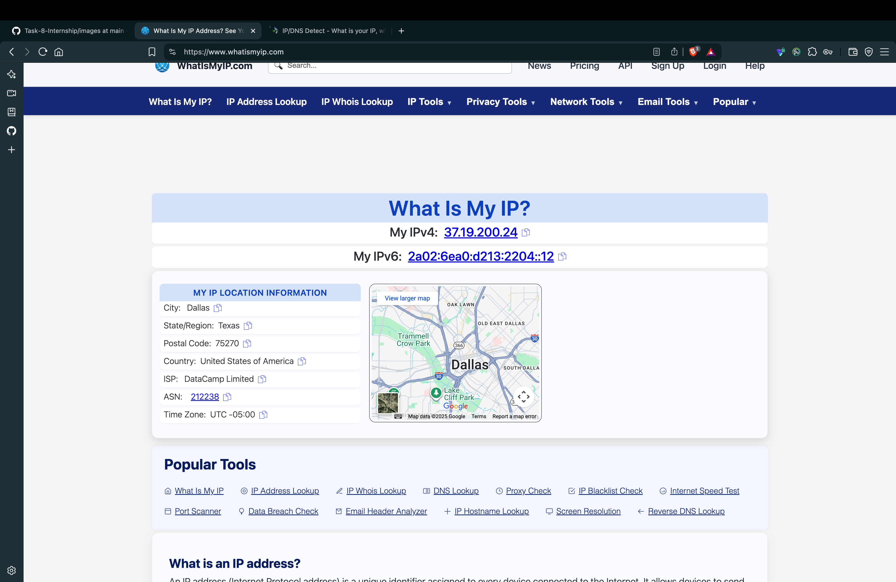
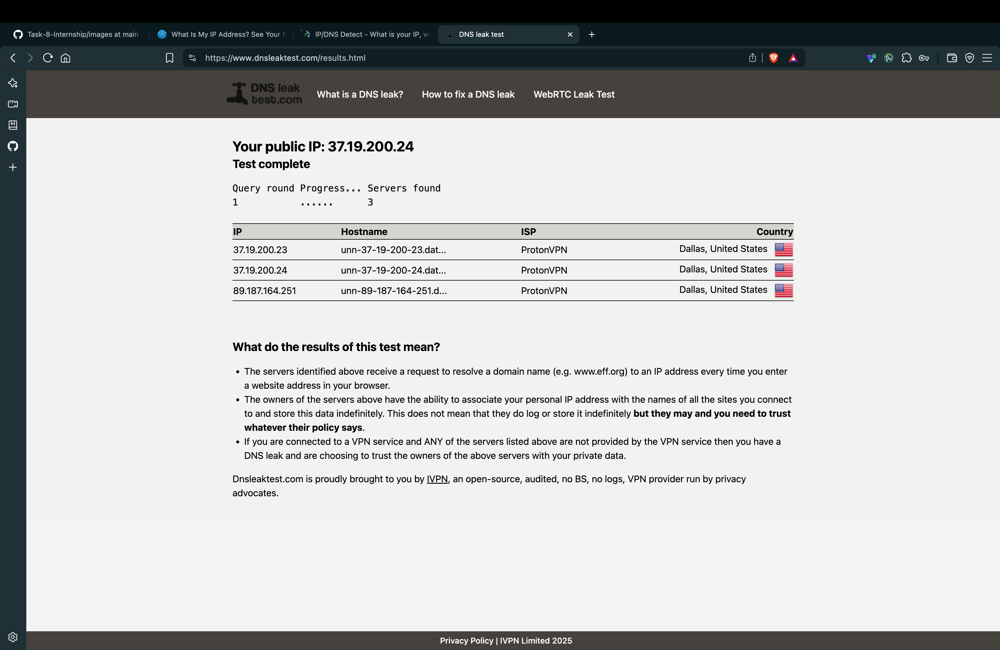
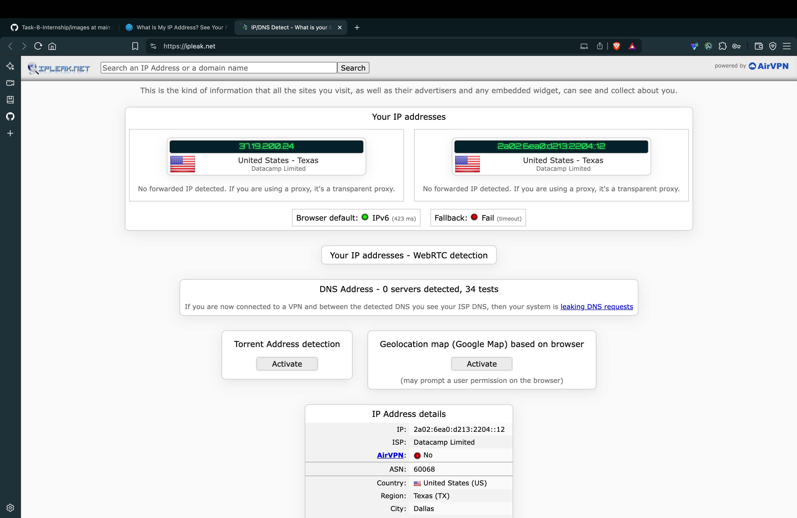

Objective
Understand the role of VPNs in protecting privacy and securing communication over the internet.
Tools Used
- ProtonVPN (Free tier)
Process Followed
- Chose a reputable free VPN service and get signed up. I have chosen ProtonVPN.
-
Download and install the VPN client. I will use the browser extension.

-
Connected to a VPN server (closest or any preferred location).

-
Established a secure connection and verified the status.

-
Verified IP address change using services like whatismyipaddress.com.
- Before connecting, my IP address was 27.61.213.202
- After connecting to the VPN, my IP address changed to 37.19.200.24
 -
Browsed websites to confirm traffic encryption and secure connection.
- Opened ipleak.net to check for DNS and WebRTC leaks.
- Opened DNSleaktest.com.

 - Disconnected VPN and compared browsing speed and IP address before and after VPN use.
- Conducted research on VPN encryption protocols and privacy features.
- Compiled a summary on benefits and limitations of using VPNs.
VPN Benefits
- Encrypts internet traffic to protect data from interception.
- Hides real IP address, enhancing anonymity online.
- Bypasses geo-restrictions to access region-locked content.
- Secures public Wi-Fi connections against snooping and attacks.
VPN Limitations
- May reduce network speed due to encryption overhead and routing.
- Does not guarantee complete anonymity; behavior analytics may still track users.
- Free VPN services may have data caps or limited server options.
- Some VPNs may log user data or have weak privacy policies.
Conclusion
This task provided hands-on experience with VPN setup and use, highlighting their importance in privacy protection and the trade-offs such as performance impact and some privacy limitations.